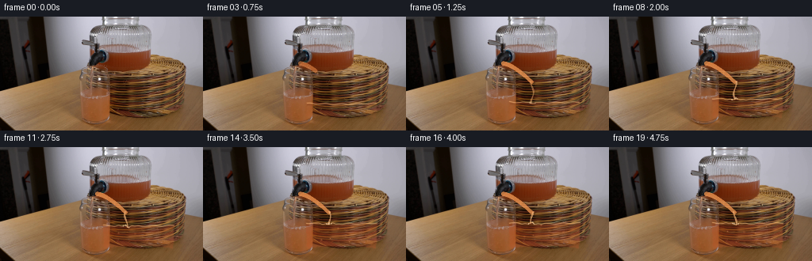
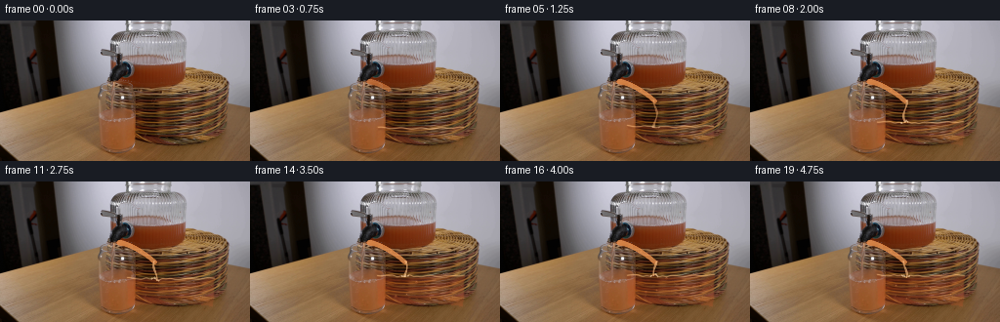
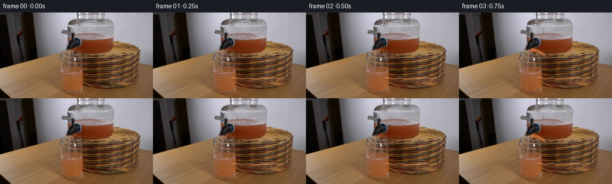

CODING AGENTS AS PIXEL WORLD MODELS
traex/DeepSeek-V4.1-Flash · 0072
点击播放 · 原生 RGB 像素
逐轮保存的候选
回放视频、检查图与代码变化。
每份候选均可单独播放。实际图片检查记录在下方工具轨迹中。
候选 01播放与检查图
点击播放 · 原生 RGB 像素

展开代码变化
--- 上一保存版本
+++ 本次保存版本
@@ -0,0 +1,273 @@
+from pathlib import Path
+
+import cv2
+import numpy as np
+from PIL import Image
+
+import artifact_io
+
+
+CASE_DIR = Path(__file__).resolve().parent
+N_FRAMES = 20
+WIDTH, HEIGHT = 256, 144
+
+
+def smoothstep(value):
+ value = np.clip(value, 0.0, 1.0)
+ return value * value * (3.0 - 2.0 * value)
+
+
+def bezier_point(p0, p1, p2, p3, t):
+ inv = 1.0 - t
+ return (
+ inv**3 * p0
+ + 3.0 * inv**2 * t * p1
+ + 3.0 * inv * t**2 * p2
+ + t**3 * p3
+ )
+
+
+def make_glass_masks():
+ yy, xx = np.mgrid[0:HEIGHT, 0:WIDTH].astype(np.float32)
+
+ center = 174.0
+ top = 79.0
+ bottom = 129.0
+ left = 127.0 + 0.065 * np.maximum(yy - top, 0.0)
+ right = 221.0 - 0.045 * np.maximum(yy - top, 0.0)
+
+ rim_sag = 2.4 * ((xx - center) / 47.0) ** 2
+ floor_curve = bottom - 3.5 * (1.0 - ((xx - center) / 46.0) ** 2)
+ inside = (
+ (yy >= top + rim_sag)
+ & (yy <= floor_curve)
+ & (xx >= left)
+ & (xx <= right)
+ )
+
+ body = inside.astype(np.float32)
+ body = cv2.GaussianBlur(body, (0, 0), 0.65)
+ body = np.clip(body * 1.12, 0.0, 1.0)
+
+ interior = inside.astype(np.uint8)
+ interior = cv2.erode(interior, np.ones((3, 3), np.uint8), iterations=1)
+ interior = cv2.GaussianBlur(interior.astype(np.float32), (0, 0), 0.55)
+
+ return body, np.clip(interior, 0.0, 1.0), top, bottom
+
+
+def liquid_surface(xx, level, phase, impact_x, impact_strength):
+ radius = np.maximum(np.abs(xx - 174.0) / 49.0, 0.02)
+ broad_curve = 1.25 * (1.0 - radius**2)
+ wave = 0.55 * np.sin((xx - 148.0) * 0.31 + phase)
+ impact = (
+ impact_strength
+ * 1.15
+ * np.exp(-((xx - impact_x) / 13.0) ** 2)
+ * np.cos((xx - impact_x) * 0.72 - phase * 1.5)
+ )
+ return level + broad_curve + wave + impact
+
+
+def make_liquid_mask(xx, yy, interior, level, phase, impact_x, impact_strength):
+ surface = liquid_surface(xx, level, phase, impact_x, impact_strength)
+ mask = np.clip((yy - surface + 0.65) / 1.4, 0.0, 1.0)
+ return mask * interior, surface
+
+
+def make_stream_mask(start, end, width, grow):
+ scale = 4
+ canvas = np.zeros((HEIGHT * scale, WIDTH * scale), np.uint8)
+ p0 = np.array(start, np.float32)
+ p3 = np.array(end, np.float32)
+ p1 = np.array((start[0] + 12.0, start[1] + 1.5), np.float32)
+ p2 = np.array((end[0] - 8.0, end[1] - 7.5), np.float32)
+
+ count = 80
+ for index in range(count + 1):
+ t = grow * index / count
+ point = bezier_point(p0, p1, p2, p3, t)
+ taper = 1.0 - 0.23 * t
+ radius = max(0.6, width * taper)
+ cv2.circle(
+ canvas,
+ (int(round(point[0] * scale)), int(round(point[1] * scale))),
+ max(1, int(round(radius * scale))),
+ 255,
+ -1,
+ lineType=cv2.LINE_AA,
+ )
+
+ canvas = cv2.resize(
+ canvas, (WIDTH, HEIGHT), interpolation=cv2.INTER_AREA
+ ).astype(np.float32) / 255.0
+ return np.clip(canvas * 1.35, 0.0, 1.0)
+
+
+def make_vertical_stream_mask(xx, yy, top, bottom, phase, strength):
+ center = 158.5 + 1.8 * np.sin((yy - top) * 0.22 + phase)
+ half_width = 1.05 + 0.25 * np.sin(yy * 0.41 - phase)
+ distance = np.abs(xx - center)
+ mask = np.clip((half_width + 0.55 - distance) / 1.0, 0.0, 1.0)
+ mask *= (yy >= top) & (yy <= bottom)
+ return mask * strength
+
+
+def blend_color(image, color, alpha):
+ alpha = np.asarray(alpha, dtype=np.float32)[..., None]
+ color = np.asarray(color, dtype=np.float32).reshape(1, 1, 3)
+ return image * (1.0 - alpha) + color * alpha
+
+
+def add_bubbles(image, interior, liquid, phase, strength):
+ if strength <= 0.0:
+ return image
+
+ yy, xx = np.mgrid[0:HEIGHT, 0:WIDTH].astype(np.float32)
+ bubbles = (
+ (149.0, 117.0, 1.2, 0.00),
+ (160.0, 120.0, 0.9, 0.31),
+ (170.0, 112.0, 1.4, 0.63),
+ (184.0, 122.0, 0.8, 0.18),
+ (198.0, 108.0, 1.1, 0.79),
+ (205.0, 118.0, 0.7, 0.47),
+ )
+ bubble_mask = np.zeros((HEIGHT, WIDTH), np.float32)
+ highlight_mask = np.zeros((HEIGHT, WIDTH), np.float32)
+ for bx, by, radius, offset in bubbles:
+ travel = 15.0 * ((phase / (2.0 * np.pi) + offset) % 1.0)
+ cy = by - travel
+ dist = np.sqrt((xx - bx) ** 2 + (yy - cy) ** 2)
+ bubble_mask += np.clip((radius + 0.55 - dist) / 0.75, 0.0, 1.0)
+ highlight_mask += np.clip(
+ (0.55 - np.sqrt((xx - bx + 0.35) ** 2 + (yy - cy + 0.35) ** 2)) / 0.45,
+ 0.0,
+ 1.0,
+ )
+
+ bubble_mask = np.clip(bubble_mask, 0.0, 1.0) * liquid * strength
+ highlight_mask = np.clip(highlight_mask, 0.0, 1.0) * liquid * strength
+ image = blend_color(image, (236, 128, 68), bubble_mask * 0.26)
+ image = blend_color(image, (255, 225, 184), highlight_mask * 0.72)
+ return image
+
+
+def generate():
+ source = np.asarray(Image.open(CASE_DIR / "first_frame.png").convert("RGB"))
+ if source.shape != (HEIGHT, WIDTH, 3):
+ raise ValueError(f"Unexpected first frame shape: {source.shape}")
+
+ base = source.astype(np.float32)
+ yy, xx = np.mgrid[0:HEIGHT, 0:WIDTH].astype(np.float32)
+ body, interior, glass_top, glass_bottom = make_glass_masks()
+
+ frames = []
+ for index in range(N_FRAMES):
+ if index == 0:
+ frames.append(source.copy())
+ continue
+
+ time = index / (N_FRAMES - 1)
+ pour_progress = smoothstep((index - 1) / 4.0)
+ fill_progress = smoothstep((index - 2) / 13.0)
+ phase = 2.0 * np.pi * (index / 7.0)
+
+ image = base.copy()
+
+ # Water already in the glass gets a very light, cool refraction before
+ # the warmer grapefruit juice reaches it.
+ initial_level = 109.5
+ water_mask, _ = make_liquid_mask(
+ xx, yy, interior, initial_level, phase * 0.35, 158.5, 0.0
+ )
+ image = blend_color(image, (176, 187, 182), water_mask * 0.035)
+
+ level = initial_level - 14.0 * fill_progress
+ impact_strength = 0.55 * smoothstep((index - 3) / 5.0)
+ liquid_mask, surface = make_liquid_mask(
+ xx, yy, interior, level, phase, 158.5, impact_strength
+ )
+
+ # Preserve the photographed glass texture while pushing the liquid
+ # toward a translucent grapefruit-orange.
+ depth = np.clip((yy - surface) / 35.0, 0.0, 1.0)
+ juice_alpha = liquid_mask * (0.13 + 0.23 * fill_progress) * (0.78 + 0.22 * depth)
+ image = blend_color(image, (189, 78, 35), juice_alpha)
+
+ # Warm transmission and a soft caustic keep the liquid from looking
+ # like a flat color fill.
+ caustic_center = 181.0 + 4.0 * np.sin(yy * 0.19 + phase)
+ caustic = np.exp(-((xx - caustic_center) / 7.5) ** 2)
+ caustic *= liquid_mask * (4.0 + 7.0 * fill_progress)
+ image[..., 0] += caustic * 0.82
+ image[..., 1] += caustic * 0.44
+ image[..., 2] += caustic * 0.18
+
+ # The new surface catches a thin rim of light; a darker line just
+ # beneath it gives the meniscus depth.
+ surface_distance = yy - surface
+ surface_glint = np.exp(-((surface_distance + 0.4) / 0.75) ** 2) * interior
+ surface_shadow = np.exp(-((surface_distance - 1.8) / 1.3) ** 2) * interior
+ image = blend_color(image, (255, 191, 127), surface_glint * 0.55)
+ image = blend_color(image, (79, 31, 15), surface_shadow * 0.16)
+
+ # Juice leaves the dispenser in a short parabolic arc, then continues
+ # vertically through the mouth of the glass to the rising surface.
+ stream_alpha = 0.0
+ if index >= 1:
+ stream_alpha = smoothstep((index - 1) / 3.0)
+ stream_mask = make_stream_mask(
+ (122.5, 59.0), (158.5, 82.5), 2.55, pour_progress
+ )
+ stream_mask *= stream_alpha
+ image = blend_color(image, (223, 103, 43), stream_mask * 0.52)
+ stream_core = np.clip((stream_mask - 0.38) / 0.62, 0.0, 1.0)
+ image = blend_color(image, (255, 182, 106), stream_core * 0.47)
+
+ vertical_strength = smoothstep((index - 3) / 3.0)
+ vertical = make_vertical_stream_mask(
+ xx, yy, glass_top + 1.0, surface + 0.5, phase, vertical_strength
+ )
+ vertical *= interior
+ image = blend_color(image, (238, 128, 62), vertical * 0.34)
+ image = blend_color(
+ image,
+ (255, 216, 159),
+ np.clip((vertical - 0.36) / 0.64, 0.0, 1.0) * 0.46,
+ )
+
+ # Small bright impact flecks and bubbles convey mixing without moving
+ # the locked-off camera.
+ foam_strength = smoothstep((index - 3) / 4.0)
+ if foam_strength > 0.0:
+ for dx, dy, radius in [(-3.5, -0.4, 0.8), (0.0, -1.2, 1.0), (3.2, 0.1, 0.7)]:
+ dist = np.sqrt(
+ (xx - (158.5 + dx + 0.8 * np.sin(phase + dx))) ** 2
+ + (yy - (surface + dy)) ** 2
+ )
+ fleck = np.clip((radius + 0.55 - dist) / 0.65, 0.0, 1.0)
+ image = blend_color(
+ image, (255, 221, 174), fleck * foam_strength * 0.55
+ )
+ image = add_bubbles(
+ image, interior, liquid_mask, phase, 0.65 * fill_progress
+ )
+
+ # A restrained warm bounce on the glass edges helps the new liquid sit
+ # inside the existing transparent vessel.
+ edge_glow = body * (1.0 - interior)
+ image = blend_color(image, (213, 111, 62), edge_glow * 0.035 * fill_progress)
+
+ frames.append(np.clip(np.rint(image), 0, 255).astype(np.uint8))
+
+ frames = np.asarray(frames, dtype=np.uint8)
+ if not np.array_equal(frames[0], source):
+ raise AssertionError("Frame 00 must remain pixel-identical to first_frame.png")
+
+ artifact_io.save(frames, CASE_DIR)
+ return frames
+
+
+if __name__ == "__main__":
+ generated = generate()
+ print(f"Saved {len(generated)} RGB frames at {WIDTH}x{HEIGHT}, 4 fps")
候选 02播放与检查图
点击播放 · 原生 RGB 像素


展开代码变化
--- 上一保存版本
+++ 本次保存版本
@@ -217,7 +217,7 @@
if index >= 1:
stream_alpha = smoothstep((index - 1) / 3.0)
stream_mask = make_stream_mask(
- (122.5, 59.0), (158.5, 82.5), 2.55, pour_progress
+ (122.0, 62.5), (158.5, 82.5), 2.45, pour_progress
)
stream_mask *= stream_alpha
image = blend_color(image, (223, 103, 43), stream_mask * 0.52)
可观测工具轨迹
实际执行的命令与返回图片。
命令 1exit 0
/bin/bash -c "pwd && rg --files -g 'prompt.txt' -g 'GENERATION_RULES.md' -g 'first_frame.png' -g '*.py' -g '*.sh' -g '*.json' -g '*.md'"
命令 2exit 0
/bin/bash -c "sed -n '1,240p' prompt.txt"
命令 3exit 0
/bin/bash -c "sed -n '1,300p' GENERATION_RULES.md"
命令 4exit 0
/bin/bash -c "find . -maxdepth 2 -type f -printf '%p %s bytes\\n' | sort"
命令 5exit 0
/bin/bash -c "sed -n '1,260p' artifact_io.py"
命令 6exit 0
/bin/bash -c "sed -n '1,260p' player_template.html"
命令 7exit 0
/bin/bash -c "python - <<'PY'
from PIL import Image
im=Image.open('first_frame.png')
print(im.mode, im.size)
print(im.getextrema())
PY"命令 8exit 0
/bin/bash -c "python - <<'PY'
from PIL import Image
import numpy as np
from collections import Counter
im=np.array(Image.open('first_frame.png'))
# dominant exact colors and 5-bit quantized
q=(im//8)*8+4
for name,a in [('exact',im.reshape(-1,3)),('q',q.reshape(-1,3))]:
c=Counter(map(tuple,a.tolist()))
print(name, 'unique',len(c))
for col,n in c.most_common(25): print(col,n,round(n/len(a)*100,2))
PY"命令 9exit 0
/bin/bash -c "python - <<'PY'
from PIL import Image, ImageDraw
import numpy as np
im=np.array(Image.open('first_frame.png'))
# scale x4 with grid coordinates
s=4
out=Image.fromarray(im).resize((256*s,144*s),Image.Resampling.NEAREST)
d=ImageDraw.Draw(out)
for x in range(0,257,16):
d.line((x*s,0,x*s,144*s),fill=(255,0,0),width=1)
d.text((x*s+2,2),str(x),fill=(255,255,0))
for y in range(0,145,16):
d.line((0,y*s,256*s,y*s),fill=(255,0,0),width=1)
d.text((2,y*s+2),str(y),fill=(255,255,0))
out.save('.tmp/grid.png')
PY"命令 10exit 0
/bin/bash -c "python - <<'PY'
from PIL import Image
import numpy as np
im=Image.open('first_frame.png')
q=im.quantize(colors=16,method=Image.Quantize.MEDIANCUT)
a=np.array(q)
pal=np.array(q.getpalette()[:48]).reshape(-1,3)
# order palette by luminance
order=np.argsort(pal.mean(1))
chars=' .:-=+*#%@ABCDEFGHIJKLMNOPQRSTUVWXYZ'
print('PALETTE')
for i in order: print(chars[list(order).index(i)],i,tuple(pal[i]), int((a==i).sum()))
print('ASCII 128x72')
# most frequent class per 2x2
for y in range(0,144,2):
line=''
for x in range(0,256,2):
block=a[y:y+2,x:x+2].ravel()
i=np.bincount(block,minlength=16).argmax()
line+=chars[list(order).index(i)]
print(line)
PY"命令 11exit 0
/bin/bash -c "python - <<'PY'
import cv2, numpy as np
im=cv2.imread('first_frame.png')
print('cv2',cv2.__version__,im.shape)
# HSV stats and dominant hue clusters for saturated pixels
hsv=cv2.cvtColor(im,cv2.COLOR_BGR2HSV)
for s0 in [30,60,100,140,180]:
m=hsv[:,:,1]>=s0
print('S>=',s0,'count',m.sum(),'bbox',np.where(m)[1].min(),np.where(m)[1].max(),np.where(m)[0].min(),np.where(m)[0].max())
if m.sum():
h=hsv[:,:,0][m]
hist=np.bincount(h//10,minlength=18)
print(' hues',[(i*10,int(n)) for i,n in enumerate(hist) if n])
# edge counts per x and y
g=cv2.cvtColor(im,cv2.COLOR_BGR2GRAY)
e=cv2.Canny(g,50,100)
xs=e.sum(0)//255; ys=e.sum(1)//255
print('x peaks',sorted(enumerate(xs), key=lambda p:p[1], reverse=True)[:30])
print('y peaks',sorted(enumerate(ys), key=lambda p:p[1], reverse=True)[:20])
PY"命令 12exit 0
/bin/bash -c "python - <<'PY'
import cv2, numpy as np
im=cv2.imread('first_frame.png')[:,:,::-1]
g=cv2.cvtColor(im,cv2.COLOR_RGB2GRAY)
# print 2x2 mean luma bands and edge presence
chars=' .:-=+*#%@'
for y in range(0,144,2):
line=''
for x in range(0,256,2):
v=g[y:y+2,x:x+2].mean()
line+=chars[min(9,int(v/256*10))]
print(f'{y:3d} '+line)
PY"命令 13exit 0
/bin/bash -c "python - <<'PY'
import cv2,numpy as np
im=cv2.imread('first_frame.png')[:,:,::-1]
hsv=cv2.cvtColor(im,cv2.COLOR_RGB2HSV)
# classes at 4x4: background bright neutral, dark, brown/orange, gray neutral, white, black
# For each block average hsv via circular hue maybe use dominant median.
for y in range(0,144,4):
line=''
for x in range(0,256,4):
b=im[y:y+4,x:x+4].reshape(-1,3).astype(float)
hh=hsv[y:y+4,x:x+4].reshape(-1,3)
v=hh[:,2].mean(); s=hh[:,1].mean(); h=np.median(hh[:,0])
if v<28: c=' '
elif v<65: c='.' if s<70 else ':'
elif s<28: c='-' if v<125 else ('=' if v<180 else '#')
elif h<8 or h>172: c='R' # red
elif h<22: c='O' if s>140 else 'o' # orange/brown
elif h<40: c='Y'
elif h<80: c='G'
elif h<130: c='B'
elif h<160: c='C'
else: c='M'
line+=c
print(f'{y:3d} {line}')
PY"命令 14exit 0
/bin/bash -c "python - <<'PY'
import cv2,numpy as np
im=cv2.imread('first_frame.png')[:,:,::-1]
hsv=cv2.cvtColor(im,cv2.COLOR_RGB2HSV)
# per x summary in zones y 0-70, 60-110, 100-144
for (y0,y1) in [(0,64),(64,112),(112,144)]:
print('\\nZONE',y0,y1)
for x in range(0,256,4):
b=im[y0:y1,x:x+4].reshape(-1,3); h=hsv[y0:y1,x:x+4].reshape(-1,3)
sat=(h[:,1]>100).mean(); bright=(h[:,2]>140).mean(); orange=((h[:,0]<30)&(h[:,1]>80)).mean(); dark=(h[:,2]<40).mean(); neutral=(h[:,1]<35).mean()
if orange>.3: c='O'
elif dark>.7:c=' '
elif neutral>.65: c='N'
elif bright>.5:c='B'
elif sat>.35:c='s'
else:c='.'
print(c,end='')
print()
PY"命令 15exit 0
/bin/bash -c "python - <<'PY'
import cv2,numpy as np
im=cv2.imread('first_frame.png')
hsv=cv2.cvtColor(im,cv2.COLOR_BGR2HSV)
# For x strip 100-200, print edge at each row after suppress textured background: high saturation orange and strong neutral contours.
for y in range(0,144,2):
row=''
for x in range(80,220,2):
h,s,v=hsv[y:y+2,x:x+2].reshape(-1,3).mean(0)
if s>100 and 5<h<25: c='O'
elif s>130 and (h<5 or h>170): c='R'
elif s<35 and v>170: c='W'
elif s<50 and v>115: c='n'
elif s<80 and v<70: c='.'
elif v>200: c='@'
elif v>150:c='+'
elif v>90:c='-'
elif v>45:c=':'
else:c=' '
row+=c
print(f'{y:3d} {row}')
PY"命令 16exit 0
/bin/bash -c "python - <<'PY'
import cv2,numpy as np
im=cv2.imread('first_frame.png')
g=cv2.cvtColor(im,cv2.COLOR_BGR2GRAY)
for p1,p2 in [(30,80),(50,120),(80,160)]:
e=cv2.Canny(g,p1,p2)
lines=cv2.HoughLinesP(e,1,np.pi/180,threshold=20,minLineLength=20,maxLineGap=4)
print('\\n',p1,p2,'lines',None if lines is None else len(lines))
if lines is not None:
for x1,y1,x2,y2 in sorted(lines[:,0], key=lambda q:-np.hypot(q[2]-q[0],q[3]-q[1]))[:40]:
print((x1,y1,x2,y2),round(float(np.hypot(x2-x1,y2-y1)),1),round(float(np.degrees(np.arctan2(y2-y1,x2-x1))),1))
PY"命令 17exit 0
/bin/bash -c "python - <<'PY'
import cv2,numpy as np
im=cv2.imread('first_frame.png')
g=cv2.cvtColor(im,cv2.COLOR_BGR2GRAY)
# bilateral blur then canny
b=cv2.bilateralFilter(g,5,30,30)
e=cv2.Canny(b,25,60)
chars=' .:-=+*#%@'
for y in range(0,144,2):
line=''
for x in range(0,256,2):
z=e[y:y+2,x:x+2].mean()/255
line+=chars[min(9,int(z*10))]
print(f'{y:3d} {line}')
PY"命令 18exit 0
/bin/bash -c "python - <<'PY'
import cv2, numpy as np
im=cv2.imread('first_frame.png')[:,:,::-1]
lab=cv2.cvtColor(im,cv2.COLOR_RGB2LAB)
x=lab.reshape(-1,3).astype(np.float32)
crit=(cv2.TERM_CRITERIA_EPS+cv2.TERM_CRITERIA_MAX_ITER,100,.2)
for k in [8,12,16]:
_,labels,cent=cv2.kmeans(x,k,None,crit,5,cv2.KMEANS_PP_CENTERS)
labels=labels.reshape(144,256)
pal=cv2.cvtColor(np.uint8(cent.reshape(1,-1,3)),cv2.COLOR_LAB2RGB)[0]
print('\\nK',k)
for i in np.argsort(pal.mean(1)):
ys,xs=np.where(labels==i)
print(i, tuple(int(v) for v in pal[i]),len(xs),'bbox',xs.min(),ys.min(),xs.max(),ys.max(),'med',int(np.median(xs)),int(np.median(ys)))
PY"命令 19exit 0
/bin/bash -c "python - <<'PY'
from PIL import Image
im=Image.open('first_frame.png')
# crop key zones scaled nearest
for name,box in [('top',(80,0,240,80)),('middle',(80,35,240,110)),('bottom',(0,85,256,144)),('center',(100,35,200,135))]:
im.crop(box).resize(((box[2]-box[0])*5,(box[3]-box[1])*5),Image.Resampling.NEAREST).save(f'.tmp/{name}.png')
PY"命令 20exit 0
/bin/bash -c "python - <<'PY'
import cv2,numpy as np
im=cv2.imread('first_frame.png')
g=cv2.cvtColor(im,cv2.COLOR_BGR2GRAY)
# gradients at selected locations
for p in [(150,40),(150,50),(150,60),(150,70),(150,80),(160,90),(180,100),(120,100),(150,120),(150,130)]:
x,y=p
print(p,'rgb',im[y,x][::-1],'mean3',g[max(0,y-1):y+2,max(0,x-1):x+2].mean())
# column luma smoothed summary at selected x
for x in [105,110,115,120,125,130,135,140,145,150,155,160,165,170,175,180,185,190,195,200,205,210]:
v=g[:,max(0,x-1):x+2].mean(1)
# local extrema significant
ext=[]
for y in range(2,142):
if (v[y]-v[y-2])*(v[y+2]-v[y])<0 and abs(v[y+2]-v[y-2])>20: ext.append((y,round(v[y])))
print(x,ext[:30])
PY"命令 21exit 1
/bin/bash -c "python - <<'PY'
import cv2,numpy as np
im=cv2.imread('first_frame.png')
g=cv2.cvtColor(im,cv2.COLOR_BGR2GRAY).astype(float)
# coherence map of structure tensor, report long structures ignoring fine noise
for sigma in [2,4]:
sm=cv2.GaussianBlur(g,(0,0),sigma)
gx=cv2.Sobel(sm,cv2.CV_32F,1,0,ksize=3); gy=cv2.Sobel(sm,cv2.CV_32F,0,1,ksize=3)
jxx=cv2.GaussianBlur(gx*gx,(0,0),5); jyy=cv2.GaussianBlur(gy*gy,(0,0),5); jxy=cv2.GaussianBlur(gx*gy,(0,0),5)
coh=np.sqrt((jxx-jyy)**2+4*jxy*jxy)/(jxx+jyy+1e-6)
mag=np.sqrt(jxx+jyy)
# strongest coherent pixels, group coarse
vals=[]
for y in range(144):
for x in range(256):
if coh[y,x]>.85 and mag[y,x]>50: vals.append((mag[y,x],x,y,coh[y,x]))
print('sigma',sigma,'n',len(vals))
for m,x,y,c in sorted(vals,reverse=True)[:80]: print((x,y),round(m,1),round(c,2))
PY"命令 22exit 0
/bin/bash -c "python - <<'PY'
import cv2,numpy as np
im=cv2.imread('first_frame.png')
g=cv2.cvtColor(im,cv2.COLOR_BGR2GRAY).astype(np.float32)
for sigma in [2,4]:
sm=cv2.GaussianBlur(g,(0,0),sigma)
gx=cv2.Sobel(sm,cv2.CV_32F,1,0,ksize=3); gy=cv2.Sobel(sm,cv2.CV_32F,0,1,ksize=3)
jxx=cv2.GaussianBlur(gx*gx,(0,0),5); jyy=cv2.GaussianBlur(gy*gy,(0,0),5); jxy=cv2.GaussianBlur(gx*gy,(0,0),5)
coh=np.sqrt((jxx-jyy)**2+4*jxy*jxy)/(jxx+jyy+1e-6)
mag=np.sqrt(jxx+jyy)
vals=[]
for y in range(144):
for x in range(256):
if coh[y,x]>.82 and mag[y,x]>100: vals.append((mag[y,x],x,y,coh[y,x]))
print('sigma',sigma,'n',len(vals))
for m,x,y,c in sorted(vals,reverse=True)[:60]: print((x,y),round(float(m),1),round(float(c),2))
PY"命令 23exit 0
/bin/bash -c "python - <<'PY'
from PIL import Image
im=Image.open('first_frame.png')
# crops split into full regions to manually inspect via sixel unavailable; save coordinate thumbnail files only
for name,box in [('dispenser',(110,5,205,110)),('glass',(100,75,215,144)),('spout',(110,30,180,100)),('left',(0,70,120,144)),('right',(180,40,256,144))]:
im.crop(box).resize(((box[2]-box[0])*8,(box[3]-box[1])*8),Image.Resampling.NEAREST).save('.tmp/'+name+'.png')
PY"命令 24exit 0
/bin/bash -c "python - <<'PY'
import cv2,numpy as np
im=cv2.imread('first_frame.png')[:,:,::-1]
# print each RGB channel quantized as ascii for key dispenser area x 105:210 y0:115
for name,ch in zip('RGB',range(3)):
a=cv2.resize(im[:,:,ch],(128,72),interpolation=cv2.INTER_AREA)
chars=' .:-=+*#%@'
print('\\nCHANNEL',name)
for y in range(0,72,1):
line=''
for x in range(45,110):
v=a[y,x]
line+=chars[min(9,int(v/256*10))]
print(f'{y*2:3d} {line}')
PY"命令 25exit 1
/bin/bash -c "python - <<'PY'
import cv2,numpy as np
im=cv2.imread('first_frame.png')
g=cv2.cvtColor(im,cv2.COLOR_BGR2GRAY).astype(float)
sm=cv2.GaussianBlur(g,(0,0),1.2)
gx=cv2.Sobel(sm,cv2.CV_32F,1,0,ksize=3); gy=cv2.Sobel(sm,cv2.CV_32F,0,1,ksize=3)
ax=np.abs(gx); ay=np.abs(gy)
# focus central object region to detect vertical and horizontal boundaries
for region in [(80,230,0,144),(90,220,0,115),(100,210,0,100),(110,205,35,100)]:
x0,x1,y0,y1=region
xs=ax[y0:y1,x0:x1].mean(0); ys=ay[y0:y1,x0:x1].mean(1)
print('\\nregion',region)
print('x top',[(x0+i,round(float(xs[i]),1)) for i in np.argsort(xs)[-20:][::-1]])
print('y top',[(y0+i,round(float(ys[i]),1)) for i in np.argsort(ys)[-20:][::-1]])
# Hough with line lengths after Canny central
e=cv2.Canny(cv2.GaussianBlur(g.astype(np.uint8),(0,0),1),25,60)
lines=cv2.HoughLinesP(e,1,np.pi/180,threshold=15,minLineLength=25,maxLineGap=3)
print('\\nlines central')
for x1,y1,x2,y2 in lines[:,0]:
if 70<min(x1,x2)<230 and min(y1,y2)<140:
L=np.hypot(x2-x1,y2-y1); ang=np.degrees(np.arctan2(y2-y1,x2-x1))
if abs(ang)>55 or abs(ang)<20: print((x1,y1,x2,y2),round(float(L),1),round(float(ang),1))
PY"命令 26exit 0
/bin/bash -c "python - <<'PY'
import cv2, numpy as np
im=cv2.imread('first_frame.png')
g=cv2.cvtColor(im,cv2.COLOR_BGR2GRAY).astype(np.float32)
# local highpass/std
mu=cv2.GaussianBlur(g,(0,0),2)
hp=np.abs(g-mu)
for name,a in [('hf',hp),('gx',np.abs(cv2.Sobel(g,cv2.CV_32F,1,0,ksize=3))),('gy',np.abs(cv2.Sobel(g,cv2.CV_32F,0,1,ksize=3))),('sat',cv2.cvtColor(im,cv2.COLOR_BGR2HSV)[:,:,1].astype(float)),('val',g)]:
print('\\n',name)
# 4px block means, 64x36 grid with percentile chars
b=a.reshape(36,4,64,4).mean((1,3))
qs=np.percentile(b,[0,20,40,60,75,85,93,97,99,100])
chars=' .:-=+*#%@'
print('pct',qs.astype(int))
for row in b:
print(''.join(chars[min(9,np.searchsorted(qs[1:-1],v))] for v in row))
PY"命令 27exit 0
/bin/bash -c "python - <<'PY'
import cv2,numpy as np
im=cv2.imread('first_frame.png')
# save different exposure/gamma/CLAHE images for numeric inspection and print pixel maps
lab=cv2.cvtColor(im,cv2.COLOR_BGR2LAB); l,a,b=cv2.split(lab)
for clip in [2,5,10]:
cl=cv2.createCLAHE(clipLimit=clip,tileGridSize=(8,8)).apply(l)
out=cv2.cvtColor(cv2.merge([cl,a,b]),cv2.COLOR_LAB2BGR)
cv2.imwrite(f'.tmp/clahe{clip}.png',out)
# overlay coordinate 8 px
from PIL import Image,ImageDraw,ImageFont
out=cv2.cvtColor(cv2.createCLAHE(clipLimit=5,tileGridSize=(8,8)).apply(l),cv2.COLOR_GRAY2BGR)
im2=Image.fromarray(cv2.cvtColor(out,cv2.COLOR_BGR2RGB)).resize((1024,576),Image.Resampling.NEAREST)
d=ImageDraw.Draw(im2)
for x in range(0,257,8):
d.line((x*4,0,x*4,576),fill=(255,0,0),width=1)
if x%16==0:d.text((x*4+1,1),str(x),fill=(255,255,0))
for y in range(0,145,8):
d.line((0,y*4,1024,y*4),fill=(255,0,0),width=1)
if y%16==0:d.text((1,y*4+1),str(y),fill=(255,255,0))
im2.save('.tmp/clahegrid.png')
PY"命令 28exit 0
/bin/bash -c "python - <<'PY'
from PIL import Image
import numpy as np
im=np.array(Image.open('first_frame.png'))
# color statistics in hand-chosen boxes
boxes={'upper_center':(125,10,175,40),'disp_body':(115,40,185,75),'bowl_water':(125,65,175,85),'glass_body':(125,88,190,135),'left_bg':(10,20,50,80),'right_bg':(200,20,245,80),'table':(10,100,100,135)}
for n,(x0,y0,x1,y1) in boxes.items():
a=im[y0:y1,x0:x1].reshape(-1,3)
print(n, 'mean',a.mean(0).round(1),'median',np.median(a,0).round(1),'q10',np.percentile(a,10,axis=0).round(1),'q90',np.percentile(a,90,axis=0).round(1))
PY"命令 29exit 1
/bin/bash -c "python - <<'PY'
import cv2,numpy as np
im=cv2.imread('first_frame.png')
# perform SLIC segmentation, then report large similar regions near center
slic=cv2.ximgproc.createSuperpixelSLIC(im,algorithm=cv2.ximgproc.SLICO,region_size=6,ruler=10.0)
slic.iterate(10)
n=slic.getNumberOfSuperpixels(); lab=slic.getLabels(); m=slic.getLabelContourMask()
print('n',n)
for i in range(n):
ys,xs=np.where(lab==i)
if len(xs)<15: continue
x0,x1,y0,y1=xs.min(),xs.max(),ys.min(),ys.max()
if x1>85 and x0<215 and y1<142:
col=im[ys,xs].mean(0)[::-1].round().astype(int)
print(i,len(xs),(x0,y0,x1,y1),tuple(col))
PY"命令 30exit 0
/bin/bash -c "python - <<'PY'
import cv2,numpy as np
im=cv2.imread('first_frame.png')
# read selected vertical column colors in 5px runs, central region
for x in [100,105,110,115,120,125,130,135,140,145,150,155,160,165,170,175,180,185,190,195,200,205,210]:
print('\\nx',x)
for y in range(0,144,4):
c=im[y:y+4,max(0,x-1):x+2].mean((0,1))[::-1].astype(int)
print(f'{y:3d}:{c[0]:3d},{c[1]:3d},{c[2]:3d}',end=' ')
if y%28==24: print()
print()
PY"命令 31exit 0
/bin/bash -c "python - <<'PY'
import cv2,numpy as np
im=cv2.imread('first_frame.png')
g=cv2.cvtColor(im,cv2.COLOR_BGR2GRAY)
for lo,hi in [(15,40),(25,60),(40,80)]:
e=cv2.Canny(cv2.GaussianBlur(g,(3,3),0),lo,hi)
e=cv2.morphologyEx(e,cv2.MORPH_CLOSE,np.ones((2,2),np.uint8))
cs,_=cv2.findContours(e,cv2.RETR_LIST,cv2.CHAIN_APPROX_SIMPLE)
print('\\nCanny',lo,hi)
for c in sorted(cs,key=cv2.contourArea,reverse=True)[:50]:
x,y,w,h=cv2.boundingRect(c); a=cv2.contourArea(c); per=cv2.arcLength(c,True)
if a>20 or (w>15 and h>15): print('bbox',x,y,w,h,'area',a,'per',round(per,1),'pts',len(c))
PY"命令 32exit 0
/bin/bash -c "python - <<'PY'
import cv2,numpy as np
im=cv2.imread('first_frame.png')
hsv=cv2.cvtColor(im,cv2.COLOR_BGR2HSV)
# print at 1 px in key zones: classify only coarse semantic using hue saturation and gray
for y0,y1,x0,x1 in [(0,70,90,220),(35,95,105,205),(65,120,100,220),(85,144,90,230)]:
print('\\nZONE',x0,x1,y0,y1)
for y in range(y0,y1,2):
line=''
for x in range(x0,x1,2):
h,s,v=hsv[y:y+2,x:x+2].reshape(-1,3).mean(0)
if v<25: c=' '
elif s<30: c='W' if v>180 else ('n' if v>110 else '.')
elif h<6 or h>173: c='R'
elif h<14: c='r'
elif h<23: c='O' if s>150 else 'o'
elif h<35: c='Y'
elif h<80: c='G'
elif h<130: c='B'
else:c='C'
line+=c
print(f'{y:3d} {line}')
PY"命令 33exit 0
/bin/bash -c "python - <<'PY'
import cv2,numpy as np
im=cv2.imread('first_frame.png')
# print edges plus color change magnitude at 1px rows/cols for chosen transects
for y in [10,20,30,35,40,45,50,55,60,65,70,75,80,85,90,100,110,120,130,140]:
row=im[y].astype(int)
diff=np.abs(np.diff(row,axis=0)).sum(1)
idx=np.argsort(diff)[-20:][::-1]
print('y',y,'x peaks',[(int(x),int(diff[x])) for x in idx[:12]])
for x in [110,115,120,125,130,135,140,145,150,155,160,165,170,175,180,185,190,195,200,205]:
col=im[:,x].astype(int); diff=np.abs(np.diff(col,axis=0)).sum(1); idx=np.argsort(diff)[-20:][::-1]
print('x',x,'y peaks',[(int(y),int(diff[y])) for y in idx[:10]])
PY"命令 34exit 0
/bin/bash -c "python - <<'PY'
import cv2,numpy as np
im=cv2.imread('first_frame.png'); hsv=cv2.cvtColor(im,cv2.COLOR_BGR2HSV)
H,S,V=cv2.split(hsv)
for desc,m in [
('orange',((H<30)|(H>170))&(S>100)&(V>30)),
('red',((H<12)|(H>172))&(S>100)&(V>30)),
('darkorange',((H<30)|(H>170))&(S>100)&(V<130)),
('brightorange',((H<30)|(H>170))&(S>100)&(V>130)),
('neutralbright',(S<40)&(V>150)),
('neutralmid',(S<50)&(V>80)&(V<150)),
]:
n,lab,stats,cen=cv2.connectedComponentsWithStats(m.astype(np.uint8),8)
print('\\n',desc,'pixels',m.sum())
for i in np.argsort(stats[1:,4])[::-1][:20]+1:
x,y,w,h,a=stats[i]
if a<20:break
print(' ',a,(x,y,w,h))
PY"命令 35exit 0
/bin/bash -c "python - <<'PY'
import cv2,numpy as np
im=cv2.imread('first_frame.png'); hsv=cv2.cvtColor(im,cv2.COLOR_BGR2HSV); H,S,V=cv2.split(hsv)
# save masks to numerically inspect components: object orange by per-row spans
m=(((H<30)|(H>170))&(S>80)&(V>20)).astype(np.uint8)
# morphology close
m=cv2.morphologyEx(m,cv2.MORPH_CLOSE,np.ones((5,5),np.uint8))
for y in range(0,144,3):
xs=np.where(m[y]>0)[0]
# runs > 2
runs=[]
if len(xs):
cuts=np.r_[0,np.where(np.diff(xs)>1)[0]+1,len(xs)]
for a,b in zip(cuts[:-1],cuts[1:]):
if b-a>=3:runs.append((int(xs[a]),int(xs[b-1])))
print(y,runs)
PY"命令 36exit 1
/bin/bash -c "python - <<'PY'
from PIL import Image
import numpy as np
im=np.array(Image.open('first_frame.png'))
# encode base64 of 64x36 RGB thumbnail and maybe install terminal image libs unavailable
# instead print RGB per 8x8 region hue & means
for y in range(0,144,8):
print('\\ny',y)
for x in range(0,256,8):
b=im[y:y+8,x:x+8].reshape(-1,3).mean(0)
print(f'{x:3d}:{b[0]:3d},{b[1]:3d},{b[2]:3d}',end=' | ')
print()
PY"命令 37exit 0
/bin/bash -c "python - <<'PY'
from PIL import Image
import numpy as np
im=np.array(Image.open('first_frame.png')).astype(float)
for y in range(0,144,8):
print('\\ny',y)
for x in range(0,256,8):
b=im[y:y+8,x:x+8].reshape(-1,3).mean(0).round().astype(int)
print(f'{x:3d}:{b[0]:3d},{b[1]:3d},{b[2]:3d}',end=' | ')
print()
PY"命令 38exit 0
/bin/bash -c "python - <<'PY'
import cv2,numpy as np
im=cv2.imread('first_frame.png')
# print edges after smoothing with only strong edge; coords every 2
sm=cv2.GaussianBlur(im,(3,3),0)
e=cv2.Canny(sm,60,120)
chars=' .:-=+*#%@'
for y in range(0,144,2):
line=''
for x in range(0,256,2):
z=e[y:y+2,x:x+2].mean()/255
line+=chars[min(9,int(z*10))]
print(f'{y:3d} {line}')
PY"命令 39exit 0
/bin/bash -c "python - <<'PY'
import cv2,numpy as np
im=cv2.imread('first_frame.png')[:,:,::-1]
lab=cv2.cvtColor(im,cv2.COLOR_RGB2LAB).astype(np.float32)
crit=(cv2.TERM_CRITERIA_EPS+cv2.TERM_CRITERIA_MAX_ITER,100,.1)
_,labels,cent=cv2.kmeans(lab.reshape(-1,3),18,None,crit,10,cv2.KMEANS_PP_CENTERS)
labels=labels.reshape(144,256)
pal=cv2.cvtColor(np.uint8(cent.reshape(1,-1,3)),cv2.COLOR_LAB2RGB)[0]
# sort by b? identify each mask at 4px blocks by majority and char ids
order=np.argsort(pal.mean(1))
chars='0123456789ABCDEFGH'
print('clusters')
for i in order: print(chars[list(order).index(i)],i,tuple(map(int,pal[i])),int((labels==i).sum()))
print('map 4x4')
for y in range(0,144,4):
line=''
for x in range(0,256,4):
b=labels[y:y+4,x:x+4].ravel(); i=np.bincount(b,minlength=18).argmax(); line+=chars[list(order).index(i)]
print(f'{y:3d} {line}')
PY"命令 40exit 0
/bin/bash -c "python - <<'PY'
import cv2,numpy as np
im=cv2.imread('first_frame.png')
# Use GrabCut with center object boxes separately? GrabCut no display but masks stats.
for name,rect in [('upper',(105,10,100,100)),('lower',(100,80,125,64)),('combined',(95,5,140,139))]:
mask=np.zeros((144,256),np.uint8)
bgdModel=np.zeros((1,65),np.float64); fgdModel=np.zeros((1,65),np.float64)
try:
cv2.grabCut(im,mask,rect,bgdModel,fgdModel,5,cv2.GC_INIT_WITH_RECT)
fg=((mask==1)|(mask==3)).astype(np.uint8)
n,lab,stats,cen=cv2.connectedComponentsWithStats(fg,8)
print('\\n',name,'fg',fg.sum())
for i in np.argsort(stats[1:,4])[::-1][:10]+1: print(stats[i].tolist())
cv2.imwrite(f'.tmp/grab_{name}.png',fg*255)
except Exception as e:print(e)
PY"命令 41exit 0
/bin/bash -c "python - <<'PY'
import cv2,numpy as np
im=cv2.imread('first_frame.png')
g=cv2.cvtColor(im,cv2.COLOR_BGR2GRAY).astype(np.float32)
# multiscale line response for diagonals near table: Hough only after masking object
sm=cv2.GaussianBlur(g,(5,5),1.5)
e=cv2.Canny(sm.astype(np.uint8),20,50)
lines=cv2.HoughLinesP(e,1,np.pi/720,threshold=30,minLineLength=40,maxLineGap=10)
print(len(lines))
for x1,y1,x2,y2 in sorted(lines[:,0], key=lambda q:-np.hypot(q[2]-q[0],q[3]-q[1]))[:100]:
L=np.hypot(x2-x1,y2-y1); ang=np.degrees(np.arctan2(y2-y1,x2-x1))
print((x1,y1,x2,y2),round(float(L),1),round(float(ang),1))
PY"命令 42exit 0
/bin/bash -c "python - <<'PY'
import cv2,numpy as np
im=cv2.imread('first_frame.png')
g=cv2.cvtColor(im,cv2.COLOR_BGR2GRAY).astype(np.float32)
# table boundary estimate along rows using first x from left where warm table begins, print rgb around
for y in range(60,144,2):
# warm score R-B; smooth x
a=im[y].astype(int); s=(a[:,2]-a[:,0]) # BGR so R-B = ch2-ch0
s=np.convolve(s,np.ones(5)/5,'same')
# find left of broad high region after x0
candidates=np.where(s>20)[0]
print(y, int(candidates[0]) if len(candidates) else None, int(np.argmax(s)),int(s.max()))
PY"命令 43exit 0
/bin/bash -c "python - <<'PY'
import cv2,numpy as np
im=cv2.imread('first_frame.png')
# For each 2px block compute median color; print selected core area x100-220 y35-135 in compact RGB hex
for y in range(35,135,4):
print('y',y)
for x in range(100,220,8):
b=im[y:y+4,x:x+8].reshape(-1,3)
med=np.median(b,0)[::-1].astype(int)
print(f'{x}:{med[0]:02x}{med[1]:02x}{med[2]:02x}',end=' ')
print()
PY"命令 44exit 0
/bin/bash -c "python - <<'PY'
import cv2,numpy as np
im=cv2.imread('first_frame.png')
# sample hue/sat/value at grid 4px in object zones and print semantic hue category with exact H
for y in range(35,135,4):
print('y',y)
for x in range(110,220,8):
b=im[y:y+4,x:x+8].reshape(-1,3); hsv=cv2.cvtColor(b.reshape(-1,1,3),cv2.COLOR_BGR2HSV).reshape(-1,3)
med=np.median(hsv,0).astype(int)
print(f'{x}:{med[0]:3d},{med[1]:3d},{med[2]:3d}',end=' ')
print()
PY"命令 45exit 0
/bin/bash -c "python - <<'PY'
import cv2,numpy as np
im=cv2.imread('first_frame.png')
g=cv2.cvtColor(im,cv2.COLOR_BGR2GRAY).astype(np.float32)
# Try template-ish symmetry / line scans: report edge gradient orientation at likely vessel borders
for y in [10,20,30,40,50,60,70,80,90,100,110,120,130,140]:
a=cv2.GaussianBlur(g,(0,0),1)[y]
# peaks separated
inds=[]
for x in range(2,254):
if a[x]>=a[x-2] and a[x]>=a[x+2] and abs(a[x+2]-a[x-2])>20: inds.append((x,round(float(a[x]),1)))
print('y',y,inds)
PY"命令 46exit 0
/bin/bash -c "python - <<'PY'
import cv2,numpy as np
im=cv2.imread('first_frame.png'); hsv=cv2.cvtColor(im,cv2.COLOR_BGR2HSV)
# table boundary y=94-.15x. print 2x2 map with explicit object masks above table and non-table anomalies below
for y in range(0,144,2):
line=''
for x in range(0,256,2):
h,s,v=hsv[y:y+2,x:x+2].reshape(-1,3).mean(0)
bd=94-.15*x
if y < bd-4: zone='A' # above table
elif y > bd+4: zone='T' # table
else: zone='B'
if v<30:c=' '
elif s>100 and (h<30 or h>170):
c='O' if zone"'!='"'T' else 'o'
elif s<30 and v>170:c='.'
elif s<50 and v>100:c='-'
elif v<70:c=':'
elif zone=='T':c=','
else:c='?'
line+=c
print(f'{y:3d} {line}')
PY"命令 47exit 0
/bin/bash -c "python - <<'PY'
import cv2,numpy as np
im=cv2.imread('first_frame.png')
# find vertical boundary coordinates via color distance left/right averaged over y bands
bands=[(10,30),(30,45),(45,60),(60,75),(75,90),(90,110),(110,135)]
for y0,y1 in bands:
a=im[y0:y1].astype(float)
d=np.linalg.norm(a[:,4:]-a[:,:-4],axis=2).mean(0)
print('band',y0,y1,'x peaks',[(int(x+2),round(float(d[x]),1)) for x in np.argsort(d)[-20:][::-1]])
PY"命令 48exit 0
/bin/bash -c "python - <<'PY'
import cv2,numpy as np
im=cv2.imread('first_frame.png')
# show 8x8 image through colored blocks, with dark background if luma low; print palette index map using 8x8 means and nearest to named colors
pal=np.array([[10,8,5],[40,35,33],[70,65,62],[100,95,90],[140,135,130],[180,178,188],[60,45,35],[100,70,50],[150,110,75],[175,145,110],[90,45,20],[130,70,30],[160,90,45],[130,130,135],[175,170,175]])
for y in range(0,144,4):
line=''
for x in range(0,256,4):
b=im[y:y+4,x:x+4].reshape(-1,3).mean(0)
i=np.linalg.norm(pal-b,axis=1).argmin();line+='0123456789ABCDE'[i]
print(f'{y:3d} {line}')
PY"命令 49exit 0
/bin/bash -c "python - <<'PY'
import cv2,numpy as np
im=cv2.imread('first_frame.png')
g=cv2.cvtColor(im,cv2.COLOR_BGR2GRAY)
e=cv2.Canny(cv2.GaussianBlur(g,(3,3),0),20,50)
# save ascii only object region 100-220,30-140 at 1px using edge map maybe detect contour extents
for y in range(30,140,2):
line=''
for x in range(100,220,2):
z=e[y:y+2,x:x+2].mean()
line += '#' if z>100 else ('+' if z>30 else ' ')
print(f'{y:3d} {line}')
PY"命令 50exit 1
/bin/bash -c "python - <<'PY'
import cv2,numpy as np
im=cv2.imread('first_frame.png')
# fit tabletop upper edge using warm pixels before object (x<100) and right (x>210)
pts=[]
for x in list(range(0,100))+list(range(210,256)):
col=im[:,x].astype(int)
s=col[:,2]-col[:,0]
ys=np.where(s>25)[0]
# first broad warm row
if len(ys):
for y in ys:
if y>40 and (s[max(0,y-3):y+4]>15).sum()>=5:
pts.append((x,y));break
print(len(pts),pts[:10])
# robust line fit
X=np.array([p[0] for p in pts]);Y=np.array([p[1] for p in pts])
for _ in range(5):
m,c=np.polyfit(X,Y,1);res=Y-(m*X+c);mask=np.abs(res-np.median(res))<2.5;X,Y=X[mask],Y[mask]
print('line y=',m,'x+',c,'n',len(X),'res',np.std(Y-(m*X+c)))
# segmented fits left and right
for sel in [(X<100),(X>210)]:
m2,c2=np.polyfit(X[sel],Y[sel],1);print(m2,c2,len(X[sel]))
PY"命令 51exit 0
/bin/bash -c "python - <<'PY'
from PIL import Image
im=Image.open('first_frame.png')
print(im.info)
PY"命令 52exit 0
/bin/bash -c "python - <<'PY'
import cv2,numpy as np
im=cv2.imread('first_frame.png')[:,:,::-1]
for y in [60,65,70,75,78,80,82,85,88,90,92,95,100,105,110,115,120,125,130,135,140]:
print('\\nROW',y)
for x in range(90,241,5):
c=im[y,x]
print(f'{x}:{c[0]:3d},{c[1]:3d},{c[2]:3d}',end=' ')
print()
PY"命令 53exit 0
/bin/bash -c "python - <<'PY'
import cv2,numpy as np
im=cv2.imread('first_frame.png')
g=cv2.cvtColor(im,cv2.COLOR_BGR2GRAY).astype(np.float32)
# radial shape test: for candidate centers/radii calculate boundary strength along arcs
for cx,cy,rx,ry in [(155,70,43,35),(150,68,40,30),(155,55,40,28),(150,100,55,45),(145,110,60,30),(155,40,50,20)]:
vals=[]
for t in np.linspace(0,2*np.pi,100,endpoint=False):
x=int(cx+rx*np.cos(t));y=int(cy+ry*np.sin(t))
if 0<=x<256 and 0<=y<144: vals.append(abs(g[y,x]-g[min(143,max(0,y-2)),x]))
print((cx,cy,rx,ry),np.mean(vals),np.percentile(vals,[50,80,90]))
PY"命令 54exit 0
/bin/bash -c "python - <<'PY'
import cv2,numpy as np
im=cv2.imread('first_frame.png')
g=cv2.cvtColor(im,cv2.COLOR_BGR2GRAY).astype(np.float32)
# map high gradient blocks 2x2
G=np.sqrt(cv2.Sobel(cv2.GaussianBlur(g,(0,0),.8),cv2.CV_32F,1,0,3)**2+cv2.Sobel(cv2.GaussianBlur(g,(0,0),.8),cv2.CV_32F,0,1,3)**2)
for y in range(0,144,2):
line=''
for x in range(0,256,2):
v=G[y:y+2,x:x+2].mean()
line += ' ' if v<15 else ('.' if v<30 else ('+' if v<60 else ('#' if v<100 else '@')))
print(f'{y:3d} {line}')
PY"命令 55exit 0
/bin/bash -c "python - <<'PY'
import cv2,numpy as np
im=cv2.imread('first_frame.png')[:,:,::-1]
# sample RGB at rows and print normalized brightness to inspect central lower object silhouette
for y in range(70,144,2):
a=im[y].astype(float)
# average over x in bins 8 px
vals=[]
for x in range(96,232,8):
b=a[x:x+8].mean(0); vals.append(b[0])
print(f'{y:3d} '+' '.join(f'{int(v):3d}' for v in vals))
PY"命令 56exit 0
/bin/bash -c "python - <<'PY'
from PIL import Image
import numpy as np
im=np.array(Image.open('first_frame.png'))
# Generate a tiny colored terminal preview using ANSI truecolor 64x36 (may display in tty output)
sx,sy=4,4
for y in range(0,144,sy):
line=''
for x in range(0,256,sx):
c=im[y:y+sy,x:x+sx].mean((0,1)).astype(int)
line+=f'\\x1b[48;2;{c[0]};{c[1]};{c[2]}m '
print(line+'\\x1b[0m')
PY"命令 57exit 0
/bin/bash -c 'python generate.py'
命令 58exit 0
/bin/bash -c "find . -maxdepth 2 -type f -printf '%p %s bytes\\n' | sort"
命令 59exit 0
/bin/bash -c "python - <<'PY'
from pathlib import Path
import numpy as np
from PIL import Image
base=np.array(Image.open('first_frame.png'))
for i in [0,1,2,3,4,6,8,10,12,15,19]:
im=np.array(Image.open(f'frames/{i:02d}.png'))
d=np.abs(im.astype(int)-base.astype(int)).max(2)
ys,xs=np.where(d>0)
print(i,'changed',len(xs),'bbox',None if not len(xs) else (xs.min(),ys.min(),xs.max(),ys.max()),'meanmax',round(float(d.mean()),3),'max',d.max())
PY"命令 60exit 0
/bin/bash -c "python - <<'PY'
import numpy as np
from PIL import Image
for i in [0,4,10,19]:
im=np.array(Image.open(f'frames/{i:02d}.png')).astype(int)
print(i,'mean',im.mean((0,1)).round(1),'std',im.std().round(1),'central mean',im[65:130,120:225].mean((0,1)).round(1))
PY"命令 61exit 0
/bin/bash -c "python - <<'PY'
from PIL import Image
import numpy as np
for i in [0,2,6,10,19]:
a=np.array(Image.open(f'frames/{i:02d}.png'))
# save 3x crops with labels separate? use existing inspection only
print(i)
# region mean RGB in horizontal bands around glass
for y0,y1 in [(78,90),(90,100),(100,110),(110,120),(120,129)]:
print((y0,y1),a[y0:y1,130:220].mean((0,1)).round(1))
PY"命令 62exit 0
/bin/bash -c "python - <<'PY'
from PIL import Image
import numpy as np
im=np.array(Image.open('first_frame.png'))
# semantic color grid x105-140 y38-75 at 2x2
for y in range(38,76,2):
line=''
for x in range(105,141,2):
b=im[y:y+2,x:x+2].reshape(-1,3).mean(0).astype(int)
R,G,B=b
if max(b)<25:c=' '
elif abs(R-G)<10 and abs(G-B)<15:c='W' if R>150 else ('n' if R>80 else '.')
elif R>G*1.4 and G>B*1.2:c='O' if R>130 else 'o'
elif R>G*1.3 and B>G*1.2:c='P'
else:c='?'
line+=c
print(f'{y:3d} {line}')
PY"命令 63exit 0
/bin/bash -c "python - <<'PY'
import cv2,numpy as np
im=cv2.imread('first_frame.png')
# color-distance grabcut lower; print mask ascii 2x2 to understand actual lower object shape
mask=np.zeros((144,256),np.uint8); bg=np.zeros((1,65),np.float64);fg=np.zeros((1,65),np.float64)
cv2.grabCut(im,mask,(100,78,125,66),bg,fg,8,cv2.GC_INIT_WITH_RECT)
f=(mask==1)|(mask==3)
for y in range(72,144,2):
print(f'{y:3d} '+''.join('#' if f[y:y+2,x:x+2].mean()>.5 else ' ' for x in range(90,235,2)))
PY"命令 64exit 0
/bin/bash -c "python - <<'PY'
from PIL import Image
import numpy as np
for i in [0,2,5,10,19]:
a=np.array(Image.open(f'frames/{i:02d}.png'))
# central crop 105:225,50:132 nearest 4x
Image.fromarray(a[50:132,105:225]).resize((480,328),Image.Resampling.NEAREST).save(f'.tmp/c{i:02d}.png')
PY"命令 65exit 0
/bin/bash -c "python - <<'PY'
from PIL import Image
import numpy as np
base=np.array(Image.open('first_frame.png')).astype(int)
for i in [2,4,10,19]:
a=np.array(Image.open(f'frames/{i:02d}.png')).astype(int)
d=np.abs(a-base).max(2)
print('\\nframe',i)
for y in range(48,132,2):
print(f'{y:3d} '+''.join('@' if d[y:y+2,x:x+2].max()>50 else ('#' if d[y:y+2,x:x+2].max()>15 else ('+' if d[y:y+2,x:x+2].max()>3 else ' ')) for x in range(100,235,2)))
PY"命令 66exit 0
/bin/bash -c 'python generate.py'
命令 67exit 0
/bin/bash -c "python - <<'PY'
import json, base64, hashlib
from pathlib import Path
import numpy as np
from PIL import Image
root=Path('.')
frames=sorted((root/'frames').glob('*.png'))
assert len(frames)==20
arr=np.array([np.array(Image.open(p).convert('RGB')) for p in frames])
assert arr.shape==(20,144,256,3) and arr.dtype==np.uint8
first=np.array(Image.open('first_frame.png').convert('RGB'))
assert np.array_equal(arr[0],first)
packed=(arr[:,:,:,0].astype(np.uint32)<<16)|(arr[:,:,:,1].astype(np.uint32)<<8)|arr[:,:,:,2]
z=np.load('pixels.npz')['pixels']
assert z.shape==(144,256,20)
for i in range(20): assert np.array_equal(z[:,:,i],packed[i])
html=(root/'index.html').read_text()
assert '__DATA__' not in html and '__ID__' not in html and 'window.__pixelReady' in html
print('frames',len(frames),'shape',arr.shape,'fps',4,'duration',20/4)
print('frame0_sha256',hashlib.sha256(frames[0].read_bytes()).hexdigest())
print('source_sha256',hashlib.sha256((root/'first_frame.png').read_bytes()).hexdigest())
print('unique_frame_hashes',len({hashlib.sha256(p.read_bytes()).hexdigest() for p in frames}))
print('pixels_ok',z.shape,'html_bytes',len(html.encode()))
print('changed_pixels',[(i,int(np.any(arr[i]"'!=arr[0],axis=2).sum())) for i in [1,2,3,5,10,15,19]])
PY'命令 68exit 0
/bin/bash -c "python - <<'PY'
from pathlib import Path
import numpy as np
from PIL import Image
# basic temporal coherence and bounds: no out-of-range values, motion monotonically enters lower glass region
arr=np.array([np.array(Image.open(p)) for p in sorted(Path('frames').glob('*.png'))])
base=arr[0].astype(int)
for i in range(1,20):
d=np.abs(arr[i].astype(int)-arr[i-1].astype(int)).max(2)
print(i,'vs_prev',int((d>0).sum()),'max',int(d.max()),'mean',round(float(d.mean()),3))
print('range',int(arr.min()),int(arr.max()))
PY"命令 69exit 0
/bin/bash -c 'git status --short 2>/dev/null || true; ls -lh generate.py frames pixels.npz index.html inspection.png transition_check.png'
保存候选 2 份；完成命令 69 次；可验证图片返回 0 张。原始 API 响应与完整日志保留在本地。